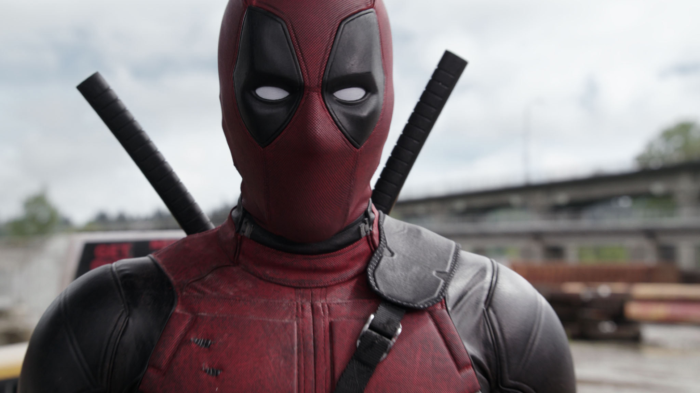
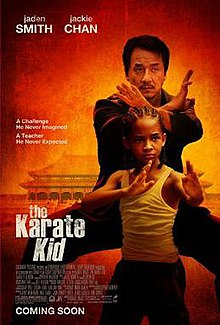
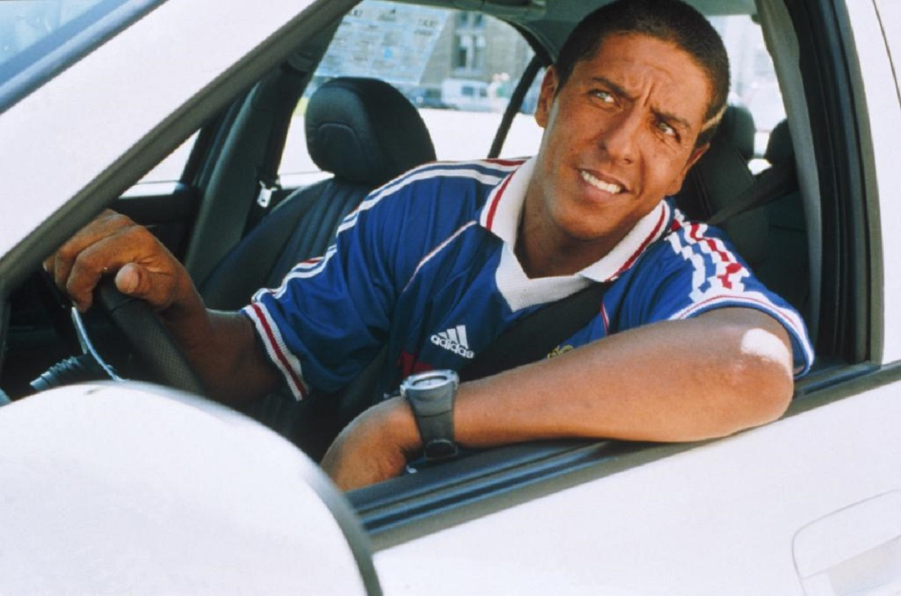

-
Deadpool
Deadpool is a character appearing in American comic books published by Marvel Comics. Created by Fabian Nicieza and Rob Liefeld, the character first appeared in New Mutants #98 (December 1990). In his comic book appearances, Deadpool is initially depicted as a supervillain of the New Mutants and X-Force, though later stories would portray him as an antihero. Deadpool is the alter ego of Wade Wilson, a disfigured Canadian mercenary with superhuman regenerative healing abilities. He is known for his tendency to joke incessantly and break the fourth wall for humorous effect.
The character's popularity has seen him featured in numerous other media outlets. In the 2004 series Cable & Deadpool, he refers to his own scarred appearance as "Ryan Renolds [sic] crossed with a Shar Pei". Reynolds himself developed an interest in portraying the character when reading this comic, which was ultimately realized in the X-Men film series, including X-Men Origins: Wolverine (2009), Deadpool (2016), and its sequel Deadpool 2 (2018). He is set to reprise the role in Deadpool & Wolverine (2024), set in the Marvel Cinematic Universe.
-
The Karate Kid
The Karate Kid is a 2010 martial arts drama film directed by Harald Zwart and produced by Jerry Weintraub, Will Smith, Jada Pinkett Smith, James Lassiter, and Ken Stovitz, from a screenplay written by Christopher Murphey, based on a story conceived by Robert Mark Kamen, the writer of the first three Karate Kid films. It serves as the fifth film in The Karate Kid franchise, and stars Jaden Smith and Jackie Chan in the lead roles, with Taraji P. Henson, Wenwen Han, Zhenwei Wang, Luke Carberry, Zhensu Wu, Zhiheng Wang, and Yu Rongguang in supporting roles.
-
Taxi
Taxi is a 1998 French action comedy film starring Samy Naceri, Frédéric Diefenthal and Marion Cotillard, written by Luc Besson and directed by Gérard Pirès. It is the first installment in the Taxi film series. It has four sequels, Taxi 2, Taxi 3, Taxi 4 and Taxi 5 and one English-language remake, Taxi (2004). It also provided the premise for the 2014 American television show, Taxi Brooklyn.
The film is set in Marseille. In the film, a bumbling police inspector blackmails a taxi driver into helping him track down a German gang. He soon moves into the driver's house. The driver is motivated to complete their crime-fighting mission, in order to get rid of his new housemate.